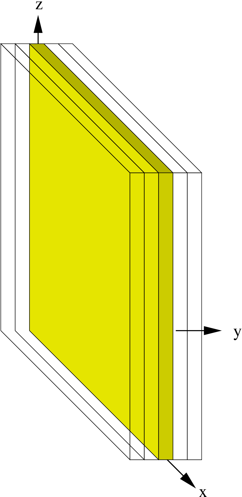

The Cartoon2D thorn allows fully 3D codes to be used to model axisymmetric systems, by considering a 3D evolution which is only one plane thick and applying a rotational tensor transformation to the flat faces of the plane as a boundary condition. This allows 3D codes to be tested efficiently on 2D problems, as well as providing a means of carrying out axisymmetric evolutions in cartesian coordinates without problems at the axis.
The Cartoon2D thorn is the implementation of an idea first presented in [1]. The principle is to use a 3-dimensional Cartesian \((x,y,z)\) coordinate grid which covers the \(y=0\) plane, but is only one finite difference molecule in width in the \(y\)-direction. The field variables in the \(y=0\) plane can be updated using standard 3D \((x,y,z)\) coordinate finite differencing, with off-plane derivatives calculated by performing appropriate rotations of field variables using the axisymmetic assumption. This technique has the advantage of removing a number of the axis problems normally associated with axisymmetric codes.
The ‘cartoon’ method was first implemented in Cactus3 by Steve Brandt and Bernd Brügmann, and was translated to Cactus4 by Sai Iyer. Details of the method can be found in [1]. This document provides a practical guide to using the thorn as it is currently implemented.
Only a small number of parameters need to be set to use Cartoon2D.
A flag which determines whether or not the cartoon boundary condition should be applied. This should be set to “yes” to use Cartoon2D, otherwise the evolution will be assumed to be standard 3D.
Determines the order of interpolations to be carried out. This will determine the number of ghost zones that you need to specify in the \(y\)-direction.
When this flag is set to “yes”, Cartoon2D is allowed to modify the grid sizes specified in the parameter file so that a cartoon-compatible grid is used. See below.
Causes Cartoon2D to print a lot of messages.
For example, the following is a section of a parameter file which sets up a cartoon-style grid in bitant mode.
activethorns = "cartoon2d cartgrid3d pugh" cartoon2d::cartoon_active = "yes" cartoon2d::order = 3 cartoon2d::allow_grid_resize = "yes" grid::type = "byspacing" grid::domain = "bitant" grid::bitant_plane = "xy" grid::dxyz = 0.2 driver::global_nx = 16 driver::global_ny = 3 driver::global_nz = 16 driver::ghost_size_x = 2 driver::ghost_size_y = 1 driver::ghost_size_z = 2 driver::processor_topology = "manual" driver::processor_topology_3d_x = 1 driver::processor_topology_3d_y = 1 driver::processor_topology_3d_z = 2 grid::avoid_originy = "no"
The following features are worth noting:
The order parameter specifies that 3rd order interpolation is to be used. This requires that only one ghost zone is required in the y direction (ghost_size_y). If 4th order interpolation was specified, then two ghost zones would be required.
The allow_grid_resize flag has been set, allowing Cartoon2D to modify the grid appropriately so that, for instance, it only extends a given number of ghost zones beyond the \(z\)-axis.
The bitant plane should always be “xy”, which means that only the positive \(z\)-axis is evolved and a reflection boundary is imposed along \(z=0\).
Though not necessary, it is often helpful to specify the processor topology explicitly to ensure that that only one processor is allocated to the \(y\) direction, and that the processors in the \(x\) and \(z\) directions reflect the relative lengths of these axes (though in this example it doesn’t matter which of these axes gets two processors).
The avoid_originy parameter needs to be turned off so that the cartoon plane corresponds to \(y=0\).
Also, it is important to keep in mind that other thorns may also require their own parameters to be set in order to interact appropriately with Cartoon2D. For instance, see Section 4. Examples of working parameter files can be found in the Cartoon2D/test/ directory.

The Cartoon2D thorn has some non-standard requirements of the grid which is normally set up by the grid implementation (for instance, by CartGrid3D). In particular,
the grid in the \(y\) direction should be exactly one plane in width, plus twice the number of \(y\) ghost zones.
the grid in the \(x\) direction only needs to extend to the \(z\)-axis, plus a few extra hang-overs. The number of extra points is determined by the number of \(y\) ghost zone points.
These requirements (in particular the second) can not be met if the grid is specified byspacing (ie. by giving a \(dx\) value), since in this case the grid is set up assuming that the axes should be centred in each grid direction.
One way to get around this is to specify the grid byrange, giving minimum and maximum coordinate values for each axis so that the \((dx,dy,dz)\) values are determined by dividing the range by the number of grid points. However, using this method it can be quite complicated to ensure that the grid spacing is even in each direction and that an appropriate number of ghost points extend past the \(z\) axis.
A simple hack to get around this complication is to specify the grid byspacing, but to set the allow_grid_resize parameter. In this case, the \((dx,dy,dz)\) values can be set in the parameter file, and the grid ranges will be calculated based on the above criteria. Note that this involves modifying the “standard” behaviour of the CartGrid3D thorn (to place the \(z\)-axis along one edge of the grid). This is accomplished by internally resetting the grid type to byrange, and then specifying ranges which are compatible with the cartoon conditions and with the appropriate number of grid points and ghost zones. Note that this involves a reset of otherwise non-steerable parameters, and so must be scheduled at CCTK_RECOVER_PARAMETERS and before the grid is set up.
Some thorns will need to know that a cartoon grid is being used in order to function properly. In principle, they should use the cartoon_active parameter to check whether a cartoon grid is in use.
In practice, however, to avoid dependencies on Cartoon2D, it is often the case that the source code for such thorns make use of #ifdef statements to check whether Cartoon2D has been compiled in. Then, to check whether a cartoon grid is active, other thorn-specific parameters need to be set. For instance, if the ADM_BSSN thorn is being used for evolution, then the parameter
adm_bssn::cartoon = "yes"
must be set. Similarly, the ADM evolution system requires adm::cartoon to be set. The AHFinder thorn requires that the parameter
ahfinder::ahf_cartoon = "yes"
be set in order to use a cartoon grid.
Note that many thorns will require cartoon-specific modifications in order to be used with the Cartoon2D thorn. It should not be assumed that a given thorn will work with Cartoon2D unless it is specifically mentioned in the documentation or source code.
The interface to the Cartoon2D thorn is through the routines contained in the Cartoon2DBC.c source file. These routines can be used by other thorns (eg. evolution thorns) to apply cartoon boundary conditions to grid functions whenever it is appropriate to do so. The three interface functions are:
This function applies the cartoon boundary condition to the grid functions in the group specified by the group parameter. The tensortype argument parameter should be one of
a scalar;
a vector (single, upper index);
a symmetric tensor with two lower indices.
This function is like BndCartoon2DGN(), but operates on individual grid functions rather than groups.
This function is like BndCartoon2DGN(), but operates takes a grid function index to indicate the grid function to which the condition should be applied.
A corresponding Fortran wrapper for each of these functions is also included.
Interpolation operators are defined in the file interpolate.c.
The file SetSym.c contains routines which re-label the flat faces of the cartoon grid as CARTOON_NOSYM boundaries. This prevents any other boundary condition (eg. physical or symmetry conditions) from being applied to these faces, as they are determined by the Cartoon2D thorn. These routines need to be scheduled before the first time boundary conditions are applied to any grid function.
The file SetGrid.c contains the code to reset the grid dimensions in a cartoon-friendly way (see Section 3) if the byspacing grid type is used. In this case, appropriate coordinate grid ranges are calculated so that the \((dx,dy,dz)\) values are preserved, and the parameters specifying the grid are reset. These are non-steerable, and so the routine must be run during the CCTK_RECOVER_PARAMETERS time bin in order to work. (This time bin is run even when checkpoint recovery is not being used.)
[1] Miguel Alcubierre, Steven Brandt, Bernd Brügmann, Daniel Holz, Edward Seidel, Ryoji Takahashi, Jonathan Thornburg (2001) Symmetry without symmetry: Numerical simulation of Axisymmetric Systems using Cartesian Grids, Int. J. Mod. Phys. D, 10, 273–289, (gr-qc/9908012).
| allow_grid_resize | Scope: private | BOOLEAN |
| Description: Allow grid to be resized in a cartoon-compatible way
| ||
| Default: no | ||
| cartoon_active | Scope: private | BOOLEAN |
| Description: Activate cartoon boundary condition
| ||
| Default: no | ||
| eno_order | Scope: private | INT |
| Description: The interpolation order applied to the ENO interpolator
| ||
| Range | Default: 4 | |
| 1:5 | From linear to fifth order.
| |
| new_excision | Scope: private | BOOLEAN |
| Description: Are we doing excision based on the new style mask?
| ||
| Default: no | ||
| new_mask_excised_name | Scope: private | STRING |
| Description: The name of the descriptor that says the point is excised for the new mask
| ||
| Range | Default: (none) | |
| .* | Could be anything
| |
| new_mask_field_name | Scope: private | STRING |
| Description: The name of the field that describes excision for the new mask
| ||
| Range | Default: (none) | |
| .* | Could be anything
| |
| new_style_excision_var | Scope: private | STRING |
| Description: The variable to be checked for new style excision
| ||
| Range | Default: (none) | |
| .* | ”Expected to be ∖’Spacemask::space_m ask∖’”
| |
| old_excision | Scope: private | BOOLEAN |
| Description: Are we doing excision based on the old style mask?
| ||
| Default: no | ||
| old_style_excision_var | Scope: private | STRING |
| Description: The variable to be checked for old style excision
| ||
| Range | Default: (none) | |
| .* | ”Expected to be ∖’Spacemask::emask∖’ ”
| |
| order | Scope: private | INT |
| Description: Cartoon’s interpolation order
| ||
| Range | Default: 4 | |
| 1:5 | From linear to fifth order.
| |
| stencil | Scope: private | BOOLEAN |
| Description: Use custom 2D stencil if available
| ||
| Default: yes | ||
| verbose | Scope: private | BOOLEAN |
| Description: Verbose information
| ||
| Default: no | ||
Implements:
cartoon2d
| Group Names | Variable Names | Details | |
| excision_variables | compact | 0 | |
| excision_active | description | Internal variables to store information about excision | |
| old_mask_vi | dimensions | 0 | |
| new_mask_vi | distribution | CONSTANT | |
| new_excision_field | group type | SCALAR | |
| new_excision_descriptor | timelevels | 1 | |
| variable type | INT | ||
Adds header:
Cartoon2D_tensors.h
Cartoon2D.h
Uses header:
SpaceMask.h
This section lists all the variables which are assigned storage by thorn CactusNumerical/Cartoon2D. Storage can either last for the duration of the run (Always means that if this thorn is activated storage will be assigned, Conditional means that if this thorn is activated storage will be assigned for the duration of the run if some condition is met), or can be turned on for the duration of a schedule function.
| Conditional: | |
| excision_variables | |
CCTK_PARAMCHECK (conditional)
cartoon2d_checktensortypes
check tensor type definitions for consistency
| Language: | c | |
| Options: | meta | |
| Type: | function | |
CCTK_BASEGRID (conditional)
cartoon2d_initexcisionvars
initialize the excision variables
| Language: | c | |
| Options: | global | |
| Type: | function | |
CCTK_RECOVER_PARAMETERS (conditional)
cartoon2d_setgrid
adjust grid sizes
| Language: | c | |
| Type: | function | |
SymmetryRegister (conditional)
cartoon2d_registersymmetries
register symmetry boundaries
| Language: | c | |
| Options: | global | |
| Type: | function | |
CCTK_PARAMCHECK (conditional)
cartoon2d_checkparameters
check cartoon2d parameters
| Language: | c | |
| Options: | meta | |
| Type: | function | |
BoundaryConditions (conditional)
cartoon_applyboundaries
apply cartoon boundary conditions
| After: | boundary_applyphysicalbcs | |
| Language: | c | |
| Type: | function | |